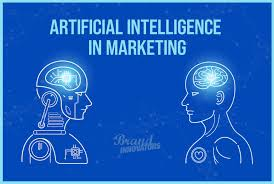

Can AI Make You Buy More? The Psychology of AI Powered Advertising
Every day, whether we realize it or not, artificial intelligence is shaping what we see, click, and buy. From personalized product recommendations to eerily accurate ads that “read our minds,” AI advertising is optimizing consumer targeting like never before. But how does it actually work? And more importantly—does it make us spend more money than we intend?
To understand AI advertising, I took a deep dive into the algorithms that power it, the psychological traits it exploits, and whether AI is actually making us more susceptible to impulsive buying decisions.
How AI Knows What You Want Before You Do
AI advertising relies on vast amounts of data to predict consumer behavior. Every search, social media like, and online purchase feeds into machine learning models that refine their ability to serve hyper-personalized ads. Here’s how it works:
Behavioral Tracking AI analyzes browsing history, past purchases, and even time spent on specific pages to gauge what products might interest you. If you’ve been eyeing a pair of sneakers but haven’t bought them yet, AI ensures you won’t forget about them—those sneakers will follow you across websites until you finally give in.
Lookalike Audiences AI doesn’t just track individual behavior; it also groups users with similar habits. If you resemble another consumer who recently bought a certain product, AI assumes you might like it too and tailors ads accordingly. This is why you might see ads for products that you never searched for but somehow seem perfect for you.
Real-Time Bidding AI optimizes ad placement through a process called real-time bidding (RTB). When you visit a website, an automated auction happens in milliseconds, where advertisers bid for the chance to show you an ad. AI ensures that the highest bidder with the most relevant ad wins, maximizing the likelihood of engagement.
Psychological Triggers in AI Advertising
Beyond just targeting, AI taps into parts of your psyche that make you more likely to buy:

Scarcity & Urgency AI detects when a user hesitates on a purchase and may trigger messages like “Only 2 left in stock!” or “Sale ends in 3 hours!” to push consumers toward impulsive decisions.
Social Proof AI curates reviews, testimonials, and even influencer endorsements to persuade users. When an ad says, “People who bought this also loved…” it plays on our tendency to trust crowd opinion.
Personalization Seeing an ad that feels tailor-made for you increases engagement. AI-generated email campaigns that address you by name, use past purchase history, and predict what you’ll want next are all strategies designed to make you feel valued—and more likely to convert.
Reinforcement Learning AI continuously learns what works. If you click on an ad but don’t buy, the system adapts by showing you a different version of the ad, perhaps with a discount, a different image, or a new call to action. This iterative approach makes AI advertising increasingly effective over time.
Can AI Advertising Actually Make You Spend More?
The short answer: yes. Studies show that personalized ads have significantly higher conversion rates than generic ones. AI’s ability to deliver precisely timed, hyper-relevant advertisements means consumers often find themselves making purchases they didn’t initially plan for.
However, AI advertising isn’t just about manipulation—it also improves the shopping experience by surfacing products consumers actually want. Instead of endless scrolling, AI helps shoppers discover items more efficiently. The real question isn’t just whether AI makes us buy more, but whether it makes us buy smarter or simply more impulsively.
Where AI-Powered Advertising Succeeds:
- Highly relevant product recommendations reduce search fatigue.
- Increased convenience by remembering preferences and purchase history.
- Better deals through AI-optimized discount strategies.
Where AI-Powered Advertising Fails:
- Encourages impulsive spending by exploiting psychological triggers.
- Privacy concerns as AI collects vast amounts of consumer data.
- Over-reliance on algorithms may lead to limited product discovery outside of AI’s recommendations.
So, is AI advertising making us shop more than we should? Maybe. But whether we fall for its persuasive tactics or use its efficiency to our advantage depends on how well we understand its influence. Awareness is key—because the more AI knows about us, the more power we have to decide when to click add to cart and when to scroll past.